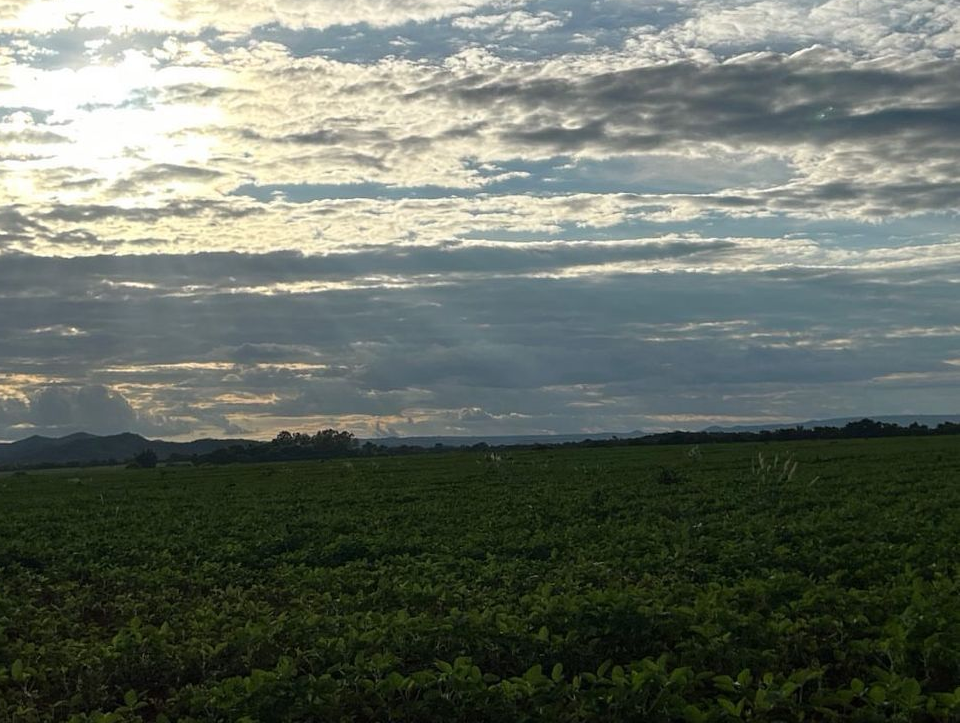
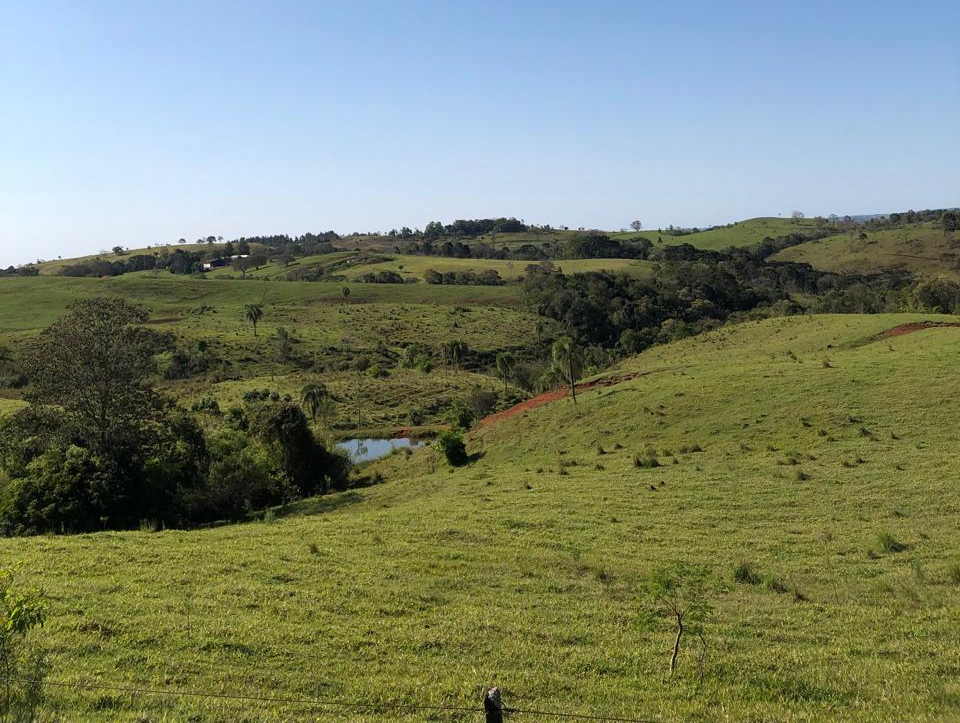
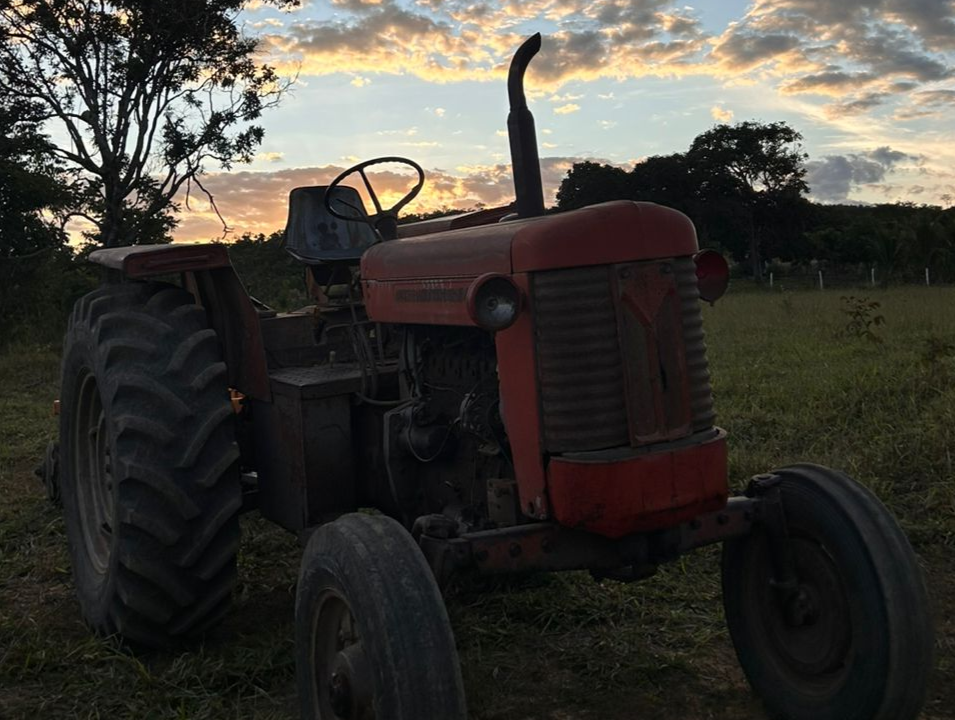
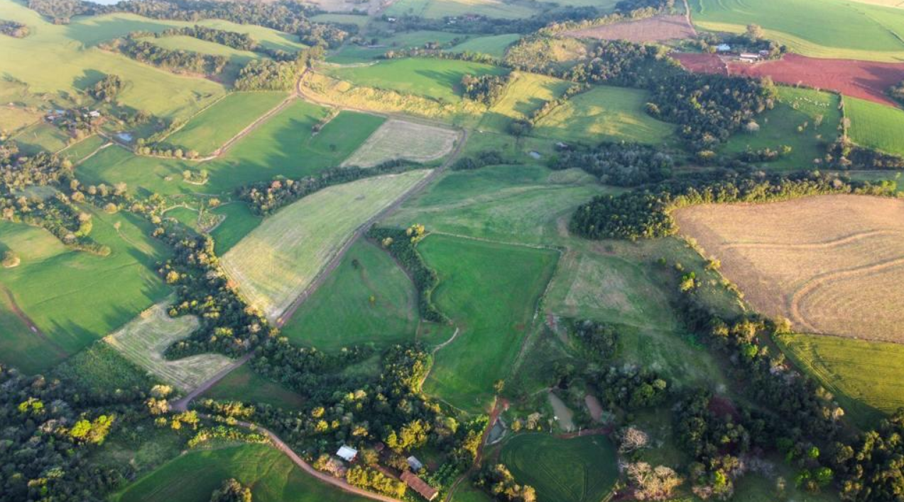
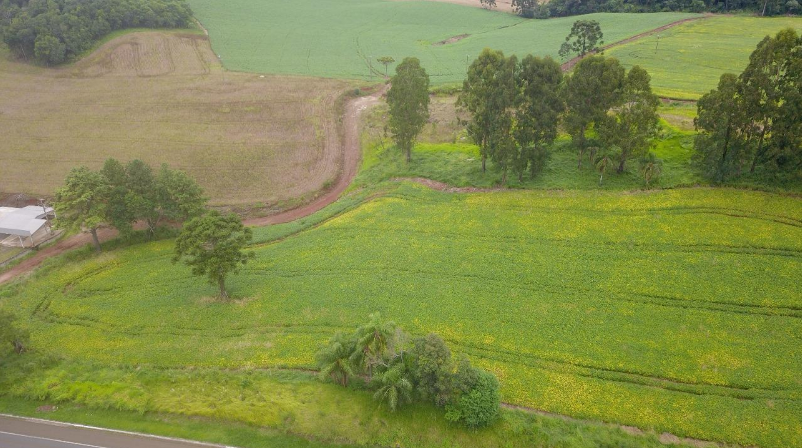
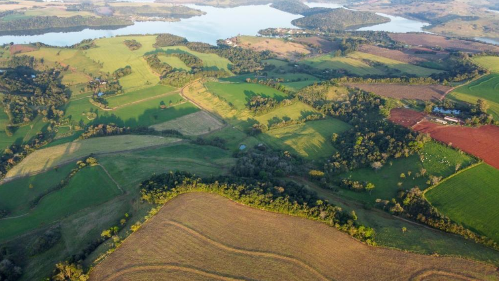
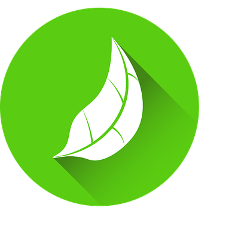
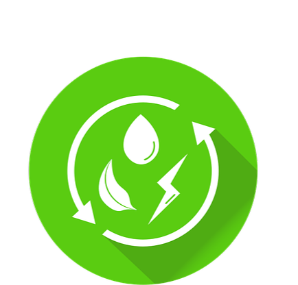

AGRINHO 2025
Festejando Conexão Campo Cidade

A Produção é essencial para o desenvolvimento das comunidades rurais.

Aumentar a produtividade no campo com responsabilidade é essencial para garantir alimento e desenvolvimento para todos.
Programas de formação sobre boas práticas agrícolas, manejo sustentável e uso eficiente dos recursos.
Uso de máquinas modernas, drones, sensores e softwares que otimizam a produção e reduzem o desperdício.
Crédito rural, acesso a mercados locais e apoio técnico para pequenos produtores ampliarem sua produção de forma sustentável.






"A parceria com a cidade nos trouxe acesso a tecnologias que revolucionaram nossa produção e melhoraram nossa qualidade de vida."

Práticas integradas garantem uso racional dos recursos naturais, preservando o meio ambiente para futuras gerações.

O fortalecimento da produção aumenta o PIB regional e gera empregos no campo e na cidade.

Comunidades mais integradas têm acesso a alimentos frescos, tecnologia e infraestrutura adequada.
• O Brasil é o maior exportador de soja e um dos maiores produtores de carne do mundo.
• A agricultura familiar é responsável por cerca de 70% dos alimentos consumidos no país.
• A tecnologia no campo, como tratores automatizados e drones, já é realidade em muitas fazendas brasileiras.
• O uso consciente da terra e da água é essencial para manter a produção e preservar o meio ambiente.